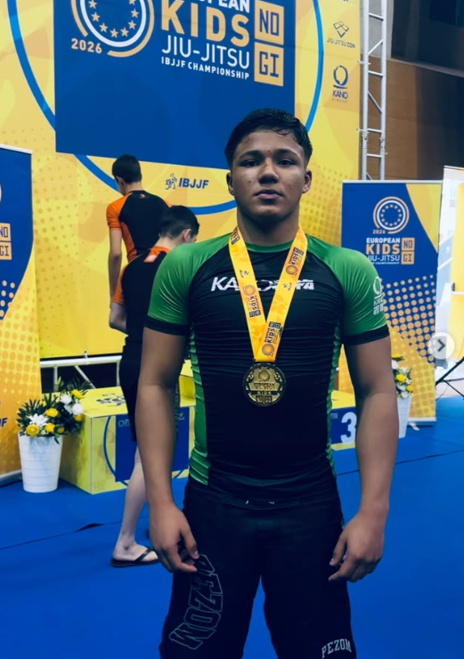

European Kids No-Gi
Participação registada em fotografia. Confirmar nome oficial, categoria, data e classificação antes de publicar o título como resultado.
Renzo Hayla Freitas da Silva, 15 anos, representa o Clube Jiu Jitsu Viseu – Delariva. Em 2026, conquistou o título de campeão europeu de Jiu-Jitsu No-Gi no escalão Adolescente 3, faixa verde, categoria ultra-pesado, após três vitórias. O seu percurso na modalidade começou aos dois anos, com orientação do pai, Rogério.

O patrocínio pode ajudar a financiar inscrições, deslocações, alojamento, equipamento e preparação desportiva. Em contrapartida, a marca pode ganhar visibilidade através de conteúdos e publicações relacionados com o percurso do atleta, mediante um plano acordado com o seu responsável legal.
Conversar sobre patrocínioAs oportunidades e contrapartidas são definidas com o responsável legal do atleta.
Uma trajetória construída desde a infância, com apoio familiar, treino regular e experiência competitiva.
O contacto com o Jiu-Jitsu começou aos dois anos, com orientação do pai, Rogério. Esse acompanhamento familiar integra a base do percurso desportivo de Renzo. Com o crescimento, a prática passou a incluir preparação para competição, participação em torneios e adaptação a diferentes categorias e contextos competitivos. os desafios em Portugal, cada combate ensinou-me que evoluir é continuar a trabalhar, mesmo quando ninguém está a ver.
Hoje, em Viseu, represento a equipa Delariva e procuro transformar cada oportunidade numa nova etapa da minha formação desportiva. Compito em Gi e No-Gi, com os olhos postos nos grandes palcos internacionais.
Esta jornada não se faz sozinho. Família, treinadores, equipa e parceiros são parte fundamental de cada conquista — e de tudo o que ainda está por vir.
Fotografias de Renzo em competições de 2026, incluindo o Europeu Kids No-Gi e o Portugal Grand Slam.
Registo de Renzo no campeonato europeu Kids No-Gi. Designação da categoria e resultado exato a confirmar com o responsável.
Uma conquista no circuito competitivo em Portugal, registada no pódio do Grand Slam 2026.
Registo da participação de Renzo numa competição nacional em Portugal.
Registo de Renzo no circuito RISE Open.
Em outubro de 2026, o Diário de Viseu noticiou o título europeu No-Gi de Renzo, destacando as três vitórias em três combates. O resultado mais relevante da temporada passa a ocupar o primeiro plano do perfil.
Participação registada em fotografia. Confirmar nome oficial, categoria, data e classificação antes de publicar o título como resultado.
Ouro num dos circuitos de referência do Jiu-Jitsu.
Primeiro lugar na categoria e vitória em superluta com cinturão.
Campeão em Gi e No-Gi, em Lisboa.
Campeão em Gi e No-Gi, em Coimbra.
Primeiro lugar numa conquista marcante no Brasil.
Um título europeu que marca a trajetória internacional.
Com o título europeu como marco da temporada de 2026, Renzo continua a desenvolver a sua carreira competitiva a partir de Viseu. Próximas competições e objetivos serão atualizados quando estiverem confirmados.
Grand Slam IBJJF Portugal, RISE Open, Copa Ibérica e Nacional Ibérica — com títulos em Gi e No-Gi.
Vitória na Copa Pódio e em competições estaduais e superlutas.
Conquistas na Copa Torres Novas e em superluta de cinturão.
Títulos no European IBJJF e no Grand Slam IBJJF Portugal.
Primeiros títulos em Opens estaduais e competições no Brasil.
Consulte os registos de competição e acompanhe as atualizações diretamente nos perfis do atleta e da família.
Para propostas de patrocínio, parcerias comerciais, convites desportivos ou pedidos de informação, contacte o responsável pelo atleta.